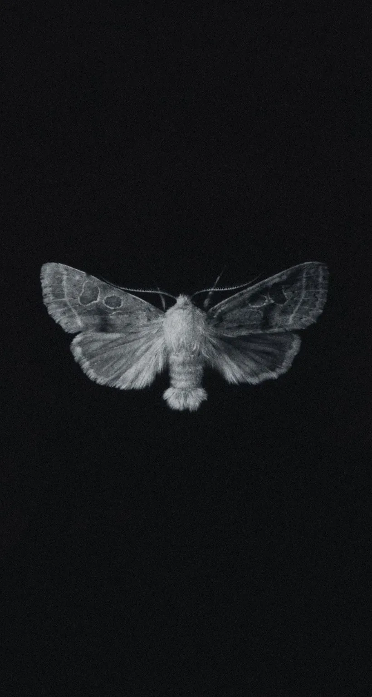
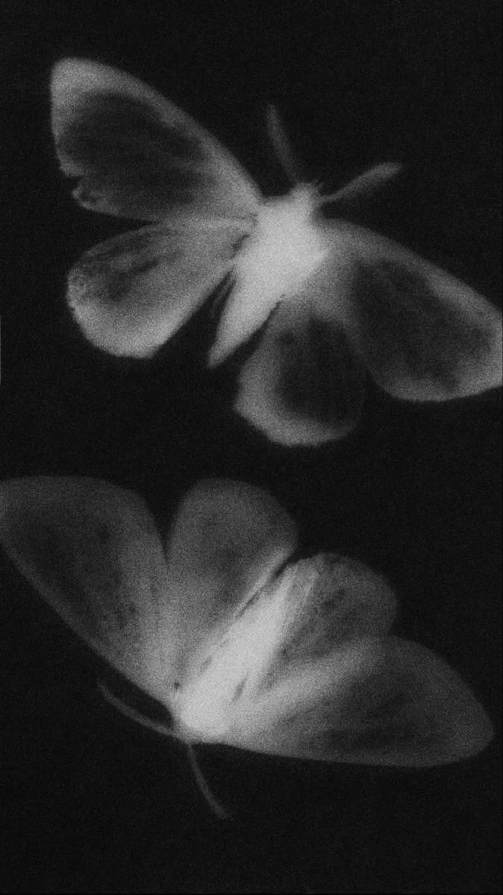

Fase II · Larva
Accesorios para tu escritorio.
En drops limitados.

15:45 Relay #70 Panel F
(moth) in relay
First actual case of bug being found.
En 1947, en Harvard, un ordenador falló. Al abrirlo encontraron una polilla muerta entre los contactos. La pegaron con celo al cuaderno de incidencias y escribieron al lado: primer caso real de un bug encontrado.
La otra razón es más simple. Las polillas van hacia la luz. Si entra una en tu habitación a oscuras, no va a la lámpara: va a lo que más ilumina, que es tu setup.
Las dos cosas apuntan al mismo sitio. Por eso el símbolo de OSA no es una inicial ni una forma bonita: es el bicho que vive donde tú trabajas.
OSA no tiene catálogo permanente. Cada drop es una colección cerrada, con una cantidad decidida de antemano. Cuando se agota, no hay garantía de que vuelva. No es una táctica de urgencia: es la única forma de hacer bien algo cuando lo haces tú.
Una cantidad concreta, decidida antes de empezar. Ni una más.
Los de la tarjeta entran antes, avisados en la pantalla de bloqueo.
La tienda abre para todos. Sin preventa y sin reserva.
Cuando se acaban las unidades, cierra. La colección queda cerrada.
Algunas piezas vuelven. Otras no. Nunca de la misma forma.
Cuando el Drop 001 abra, las unidades no van a durar. Los que tienen la tarjeta lo saben en la pantalla de bloqueo, en el momento en que pasa.
Se guarda en tu Wallet.
Te avisa antes que nadie.